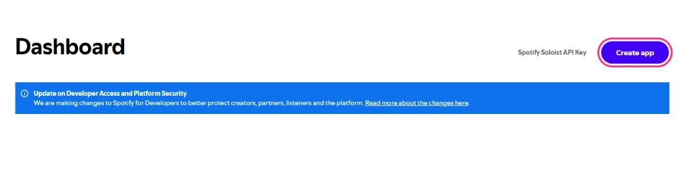
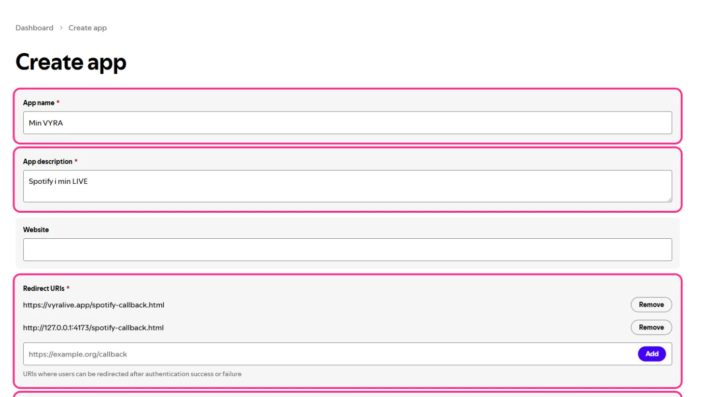
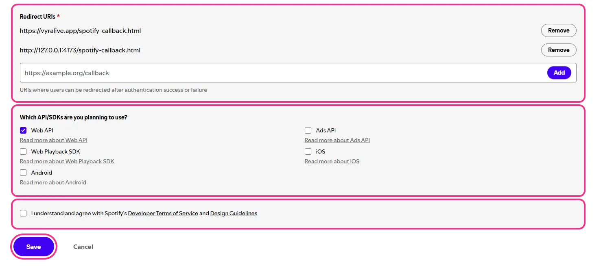
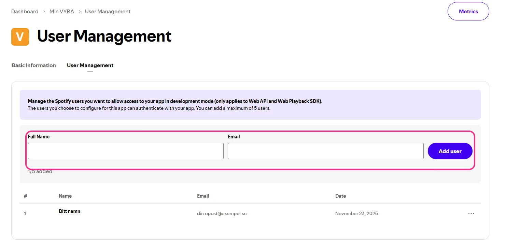
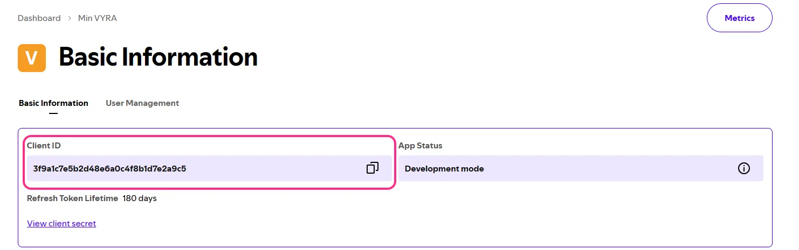
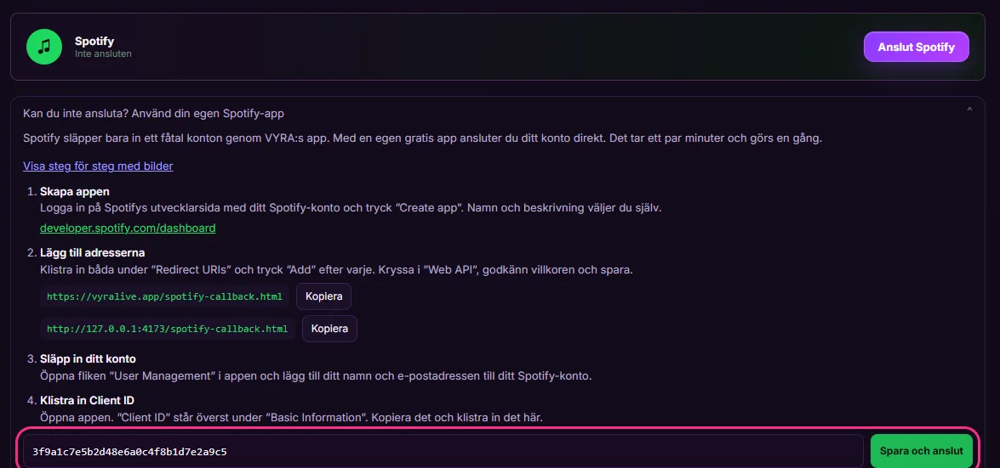

Anslut Spotify till VYRA
Med en egen gratis Spotify-app ansluter du ditt konto direkt. Det tar ett par minuter och görs en gång. Sedan styr tittarna musiken med !play, !skip och !song i din LIVE.
Varför ett eget steg? Spotify släpper bara in ett fåtal konton genom VYRA:s gemensamma app. Din egen app har bara ett konto – ditt – och då gäller inget tak.
-
Skapa appen
Öppna developer.spotify.com/dashboard och logga in med ditt vanliga Spotify-konto. Tryck på den lila knappen Create app uppe till höger.

Tryck på Create app – inte på Spotify Soloist API Key. -
Fyll i namn och beskrivning
Namn och beskrivning väljer du själv, till exempel Min VYRA och Spotify i min LIVE. Fältet Website kan vara tomt.

-
Lägg till adresserna
Klistra in adresserna en i taget under Redirect URIs och tryck Add efter varje. Kopiera dem härifrån – en enda felstavad bokstav gör att Spotify säger nej.
https://vyralive.app/spotify-callback.htmlhttp://127.0.0.1:4173/spotify-callback.htmlKryssa sedan i Web API, kryssa i rutan där du godkänner Spotifys villkor och tryck Save.

-
Släpp in ditt konto
Öppna fliken User Management i din nya app. Skriv ditt namn och e-postadressen till ditt Spotify-konto och tryck Add user.

Använd samma e-postadress som du loggar in på Spotify med. -
Kopiera Client ID
Gå tillbaka till fliken Basic Information. Överst står Client ID, en rad med 32 tecken. Tryck på kopieringsikonen till höger om den.

Client ID är inte hemligt. Client secret behöver du inte. -
Klistra in i VYRA
Öppna VYRA och sidan Spotify. Öppna raden Kan du inte ansluta? Använd din egen Spotify-app, klistra in ditt Client ID och tryck Spara och anslut. Spotify frågar om lov – tryck Godkänn.

Klart. Kortet visar nu Ansluter via din egen Spotify-app.
Om något går fel
- ”INVALID_CLIENT: Invalid redirect URI”
- En adress i steg 3 saknas eller är felstavad. Ta bort den, kopiera den igen härifrån och tryck Add.
- ”Spotify-kontot är inte tillagt i din egen Spotify-app”
- Steg 4 är inte gjort, eller så står en annan e-postadress än den till ditt Spotify-konto.
- Anslutet, men inget spelas
- Kontot har inte Premium, eller så är Spotify inte öppet på någon enhet. Starta en låt i Spotify en gång, så hittar VYRA spelaren.
- ”Client ID är 32 tecken”
- Något extra följde med när du kopierade. Kopiera med ikonen i steg 5 i stället för att markera texten.
Fastnar du ändå? Skriv till oss under Support i VYRA.